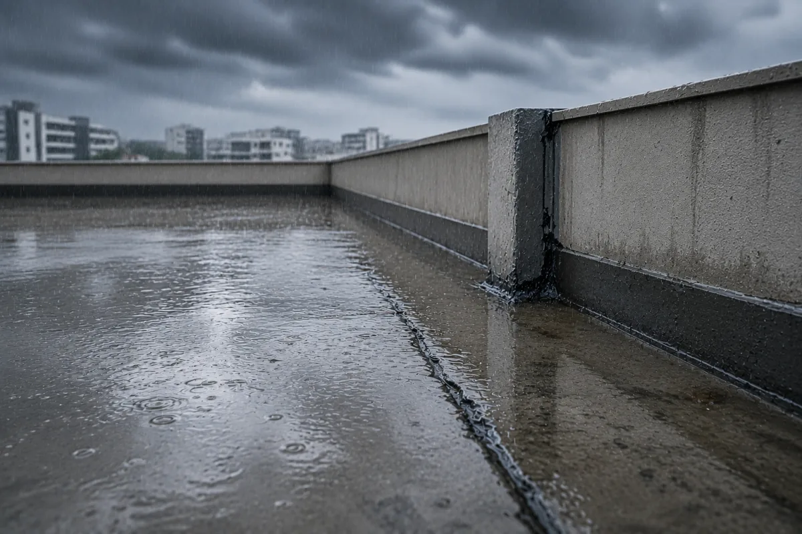
01Rain finds the weakness
Season after season, standing water searches for unsealed joints and porous concrete.
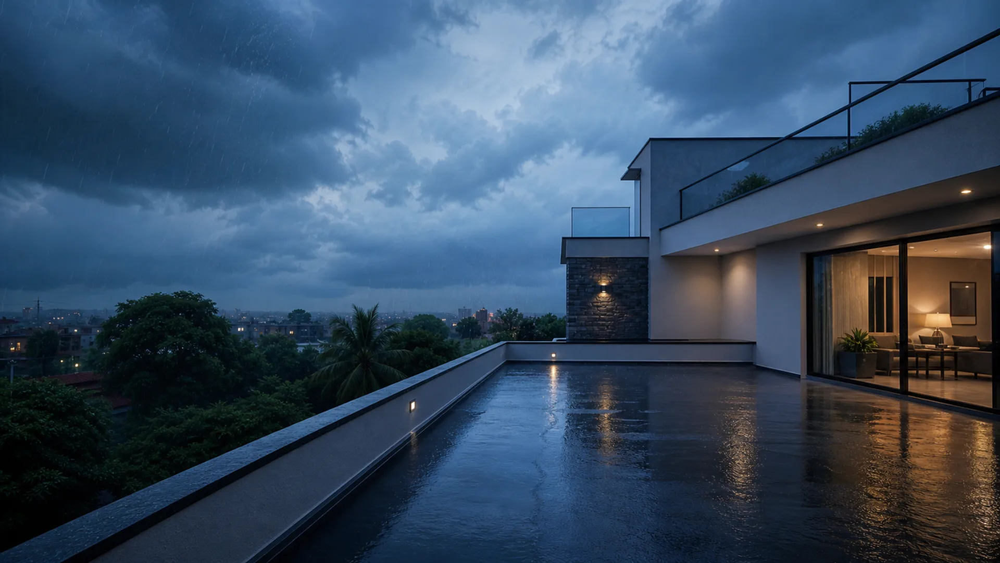
Engineered protection. Built to last.
Professional terrace waterproofing. Free inspection. Long-lasting protection.
What water leaves behind

01Season after season, standing water searches for unsealed joints and porous concrete.
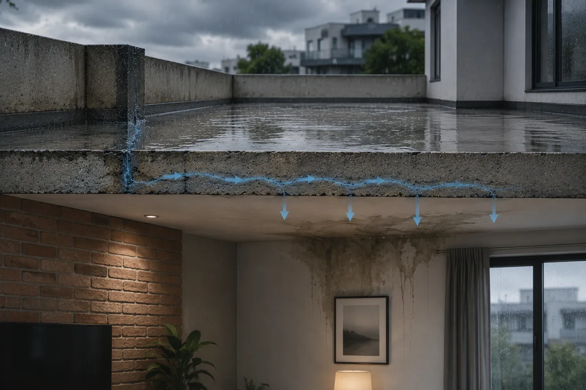
02Water travels through the slab, often appearing far away from the original entry point.
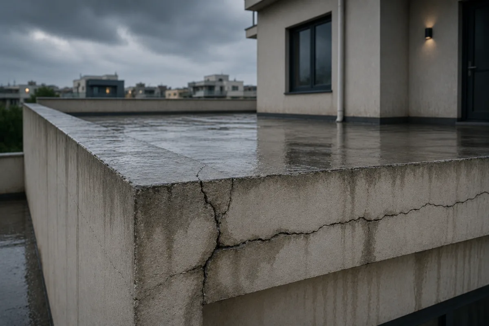
03Heat, movement and trapped moisture turn hairline cracks into wider structural concerns.
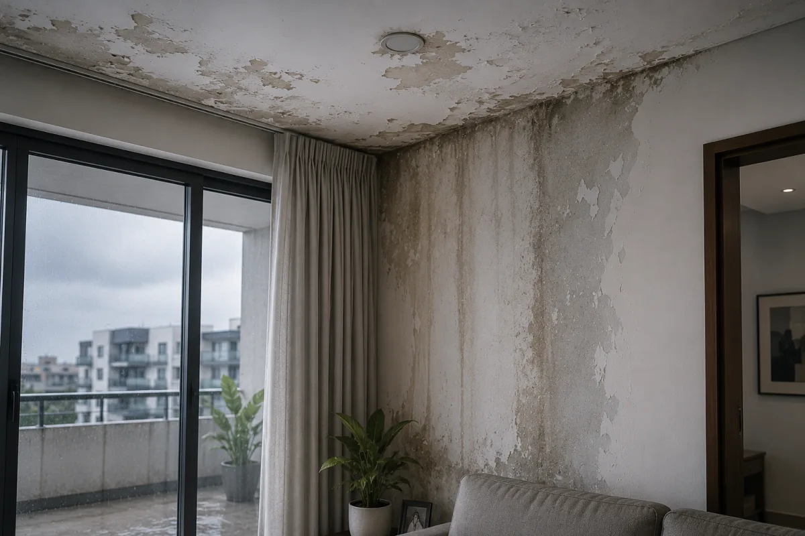
04Paint peels, steel corrodes and indoor air quality suffers long before the damage is obvious.
“A small crack today can become a costly repair tomorrow.”
Our process
Every AQUVEX project follows a measured five-stage system. No shortcuts. No guesswork.
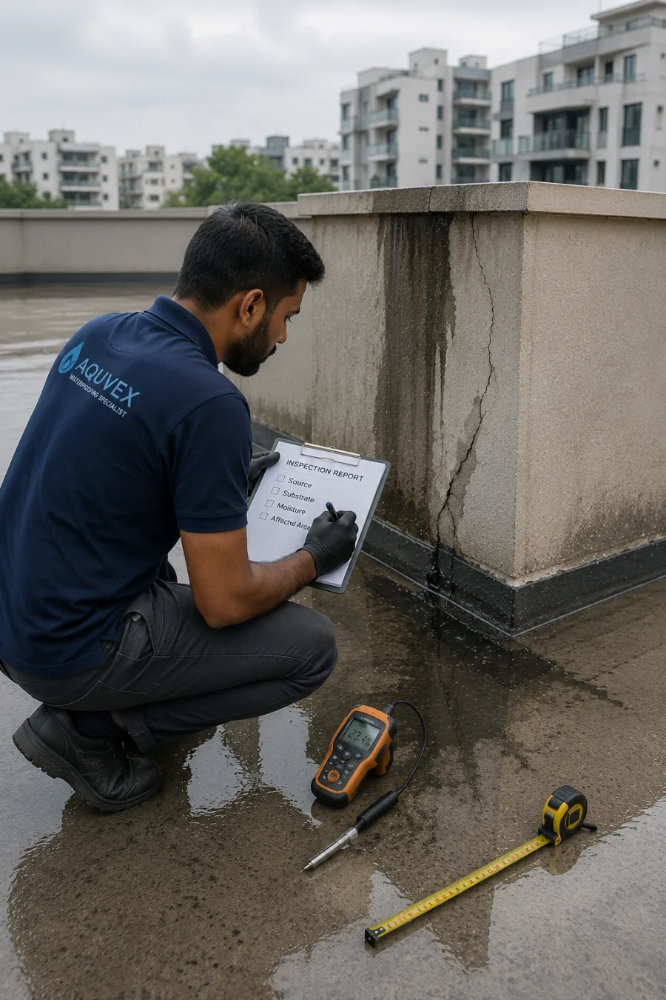
We identify the source, assess the substrate and measure the affected area.
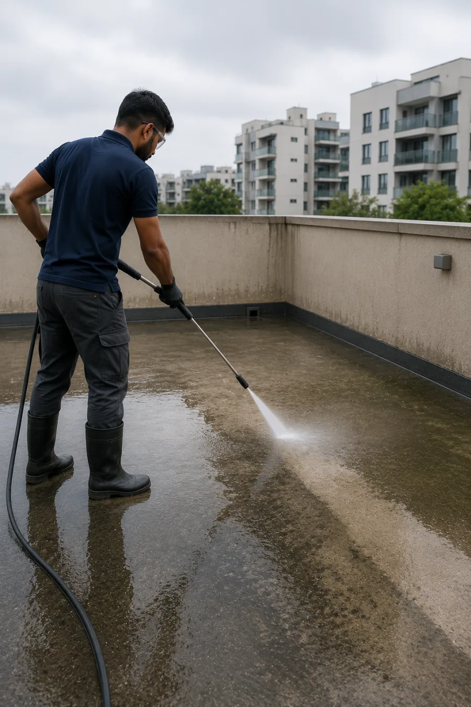
Dust, algae and weak surface material are removed for reliable adhesion.
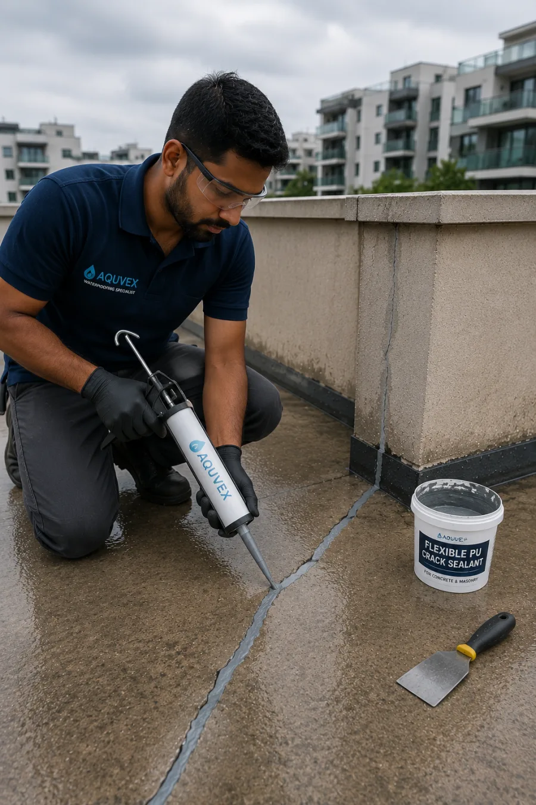
Cracks and junctions are repaired with flexible, purpose-selected compounds.
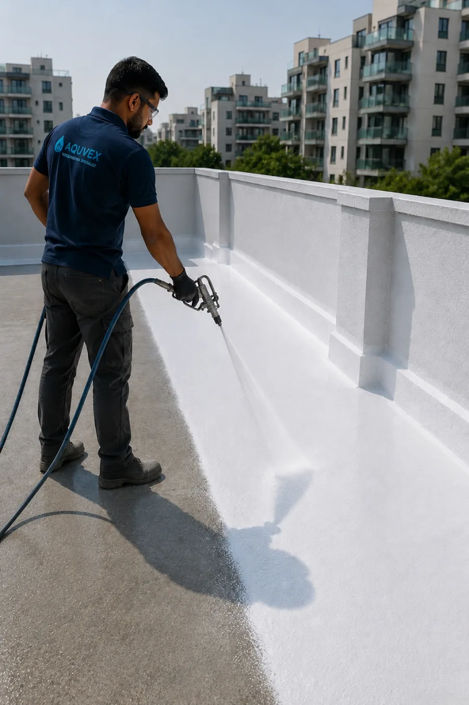
A calibrated multi-coat membrane forms a continuous protective barrier.
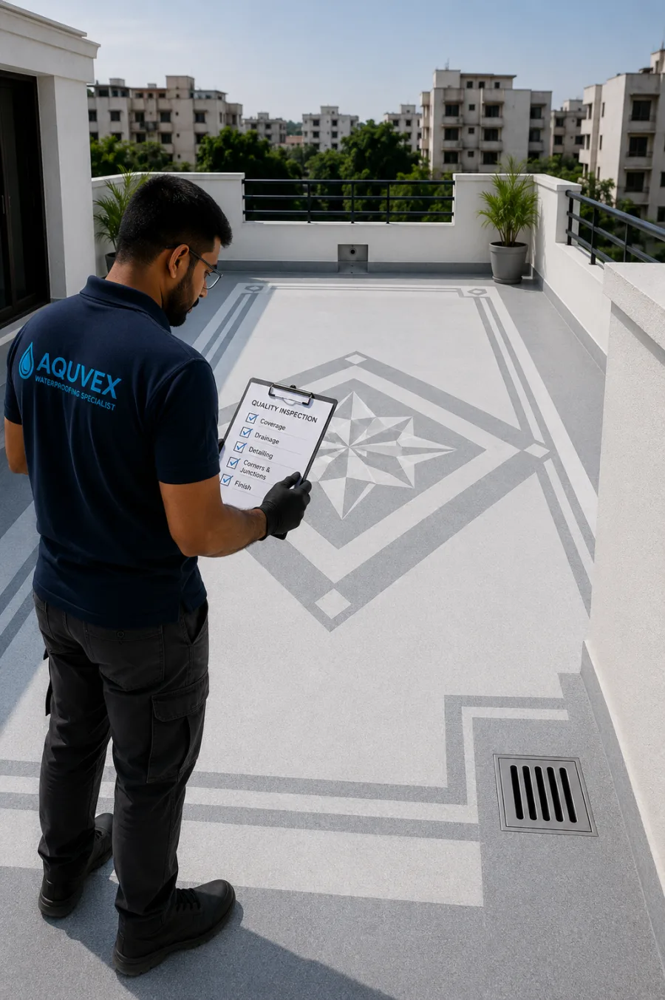
Coverage, detailing and drainage are verified before final handover.
Visible transformation
Drag the control to inspect a representative terrace restoration.
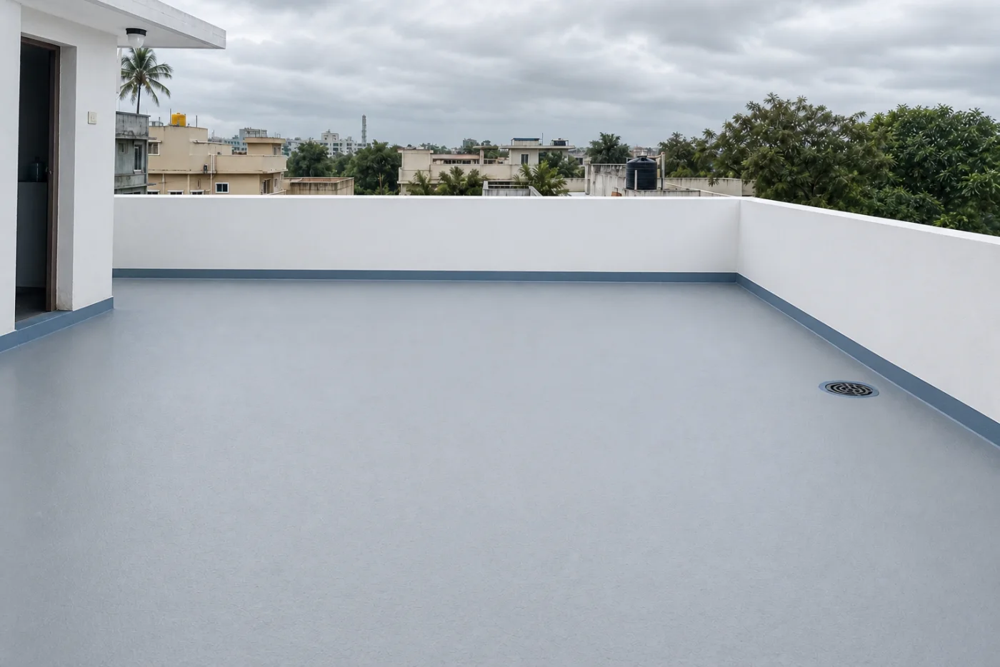
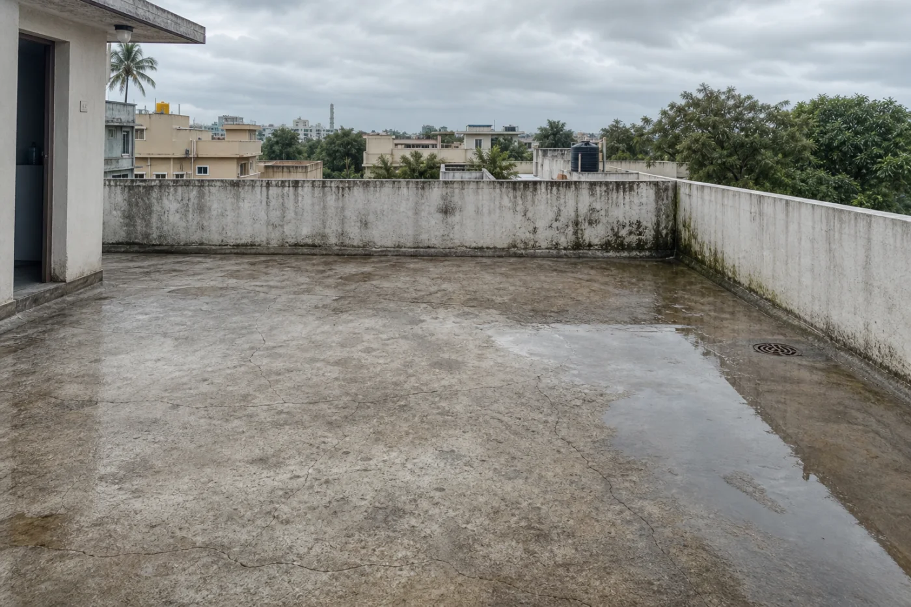
Specialist services
Focused solutions for every stage of water damage—from early detection to full-surface renewal.
Seamless systems designed around your terrace condition, drainage and exposure.
Request an assessment →Why AQUVEX
Clear recommendations, disciplined application and accountable aftercare—because protection should feel certain.
Talk to a waterproofing specialist →Proven systems matched to the surface, not a one-product-fits-all approach.
Trained technicians who understand detailing, drainage and application conditions.
Stage checks and a final review before your project is signed off.
Written protection with straightforward terms and responsive support.
Itemised scope and pricing before work begins. No surprise additions.
Customer stories
Frequently asked
Still deciding what your terrace needs?
Ask our inspection team →Damp ceiling patches, peeling paint, musty odours, standing water and visible cracks are common warnings. A site inspection can trace the source before damage spreads.
Most residential terraces take three to seven days, depending on area, repairs, weather and curing time. Your written scope includes a realistic schedule.
Emergency repairs may be possible, but full coating systems need a dry weather window and suitable surface moisture levels. We check the forecast before scheduling.
Warranty length depends on the selected system and substrate condition, with options up to ten years. Coverage and exclusions are provided in writing before work starts.
Yes. For serviceable locations, we inspect the concern, discuss suitable solutions and share a transparent estimate without an inspection charge.
Before the next downpour
Book a no-obligation inspection and receive a clear, practical recommendation.
Book Free Inspection